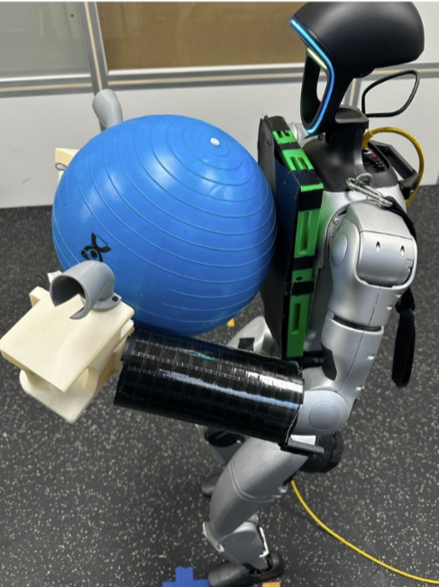
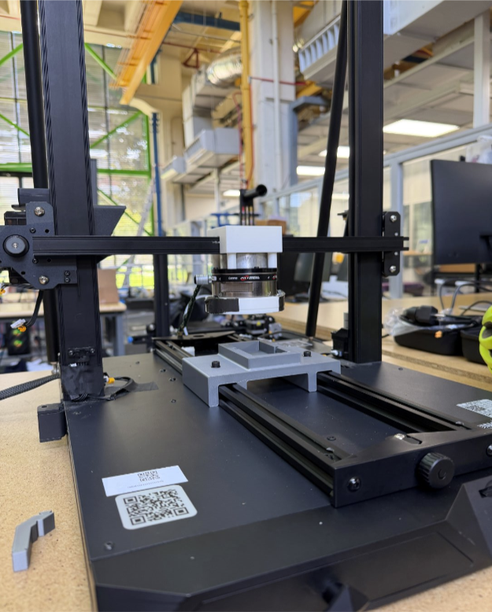

Education
M.S. in Mechanical Engineering
Georgia Institute of Technology
2025 - 2027
B.S. in Mechanical Engineering
University of Illinois Chicago
2021 - 2025
Skills
Software & Programming
Prototyping & Fabrication

Mechanical Engineering / Robotics / Control
Mechanical Engineering Master's Student at Georgia Tech
Georgia Institute of Technology
2025 - 2027
University of Illinois Chicago
2021 - 2025
Software & Programming
Prototyping & Fabrication
I'm a mechanical engineering master's student at Georgia Tech working at the intersection of automation, robotics, and control. I build physical systems that turn intelligent behavior into reliable motion, with applications across manufacturing, aerospace, and medical technology.
Open to spring 2027 internships and full-time roles
Georgia Institute of Technology
Paper: WT-UMI: Tactile-based Whole-Body Manipulation via Force-Supervised Contact-Aware Planning
Conference on Robot Learning 2026




Intel
University of Illinois Chicago
University of Illinois Chicago
Collaborated in a team of 4 to design and build a drivetrain for a lunar robot competition entry. The drivetrain was designed to handle the rover's weight and provide reliable performance during the competition. The project was presented at an engineering exhibition.


Collaborated cross-functionally with peers to pioneer an autonomous drone capable of object detection and airdrop delivery. The drone was designed to operate at various altitudes for a long duration and safely deliver a payload to a designated location.